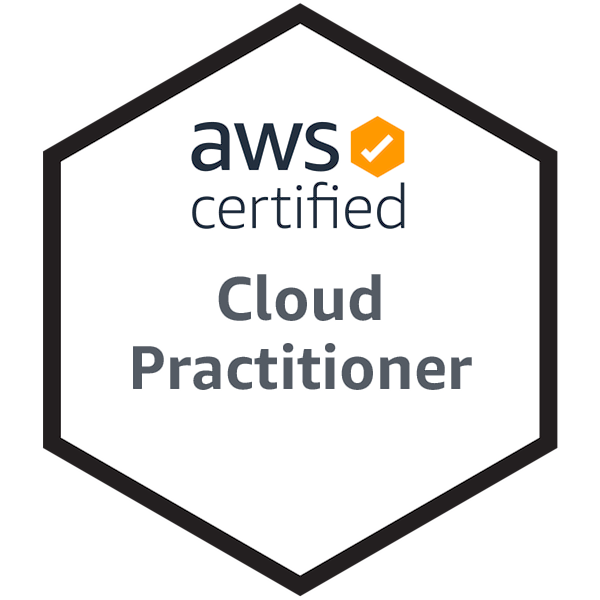
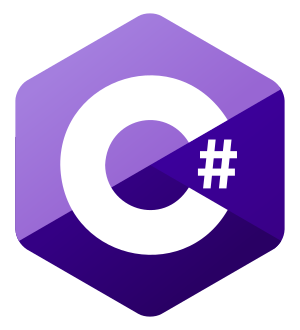

Tom Runnels
This website is not intended to be a marketing tool of my business ForwardTech Solutions. This is a personal record/resume/blog-of-sorts of my personal development and journey in the world of entreprenurship. For more information on ForwardTech, check out the website Otherwise, enjoy learning more about me.
I am a graduate of Liberty University with a love and passion for technology and software development. While a student at Liberty and in high school, I have used the opportunities and resources available to me to grow my knowledge in a variety of development disciplines. Now, I am diving into the world of business and entreprenurship by founding ForwardTech Solutions, so I can hone my specialized skills, learn as much as I can, and therefore live the effective life I am called to.
My Mission
Goal
Whether it be SaaS, mobile platform, an API, or some other medium, I feel the calling on my life to be an entreprenur, and what better way then by being a part of the exciting and cutting-edge world of software that has inspired me my whole life. What ideas, products, or businesses I will eventually attempt are unknown at this time, so I always remain sensative to the pain points, developments, and trends of the world around me.
Skills
To reach my goal in a humble way, I have clearly defined and resolved to developing myself. Focusing on these 3 skills, at the expense of an easy job or reliable paycheck, will set me on the path towards the effective man God has called me to be, specifically in the areas concerning my goal
These skills are...
It's more for myself than anyone, but feel free to follow their progress below!
Progress
1. Indentify Problems, Engineer Solutions
While this project was more 'engineering solutions' than it was 'identifing problems', I still had to push my critial thinking. When the client approached me, the idea was fairly undefined. Together, we thought through the app's values from the perspective of our typical customer, and defined features from there. We also had to define and work around our constraints, which with and older user demographic, were a lot. In the end though, the app the scope and feature set of the app served our problem extreamly well
2. Leadership
Since moving back to Florida, I have taken a leadership role at my local church. With the churches refocus on it's mission, and a growing demographic of young adults in our area, more than ever has our church needed to provide an environment that welcomes, develops, and provides opportunity to young adults. Working closely with my pastors, I have formed a weekly bible study and we are collaboratively developing systems to best capture the souls and God-given-gifts of those around us. I have been blessed with the opprounity of being a leader in this effort.
At the moment, ForwardTech has no employees. But though it may be seen as cliche, stepping out on my own has taught me an amazing
amount of leadership over self. Motivation, focus, and time management are difficult when there’s no manager
sitting behind you or teacher defining your due date. Being very intentional to stick to my schedule and
always push myself toward more has stretched my leadership skills in ways I never imagined.
“He who rules his spirit [is better] than he who takes a city” Proverbs 16:32
3. Technical Abilities
The Auction App really stretched my technical abilities up to that point. It was the first project I'd ever worked on to use one of the big cloud providers, in this case, Amazon Web Services. A large part of the project was learning what AWS offered, which tools to use, and how to use them. I was able to learn and create the entire backend of the project. Not only was it a great learning experience, but it was a huge confidence builder in my technical ability skill. It also led me to sit for and recieve my Cloud Practitioner certification
Employment
Software Development Consultant / Founder
Founder of ForwardTech, which provides software development and maintenance services to the local South Florida area. As a single-man shop, I work on everything from client interactions to accounting to time and resource management, to, of course, software development.
Already my hunger to be an entreprenur and hone my specialized skills in Computer Science has been filled with a number of exciting projects that I never would have had the opprounity to be apart of in a typical programming job. Full stack development, database maintenance and transfer, and on-site IT and networking in just the first 6 months. Very excited to see what the future holds!
Junior Web Developer
Worked on the development, upkeep, and maintenance of websites using the Joomla CMS. I have had the privilage of wearing many hats in this role, having had a role in every part of the web development life cycle. I have sat in on client meetings, worked with our graphic designers on initial designs, spent lots of time on website development, incorporated client feedback, and continue to maintain past sites.
The most exciting project I've worked on at Stimulus was the development of a mobile app. As the only devleoper in the office, I headed the development of a cross-platform mobile app using React Native. Check it out below!
Capstone Team Member
During our senior year, Liberty computer science students are grouped into a number of differnt teams and tasked with organizing our team structure, determing a list of deliverables based on a passed-down project, designing and upkeeping a rigid Trello board, and developing the client's software.
I have been a member of the three-member Thailand team. Our project is a third year school management software built using the VFront framework. Personally, I have been very invloved in the back-end of our project. I have deployed the LAMP stack and our software to several Virtual Machines, including an on-campus server and a Microsoft Azure server, and have been in charge of maintaining them when it seems that everything that can go wrong has! You can check out our project here
IT Development Team Intern
Worked two summers as a member of the companies’ development team. As my first exposure to professional work, I learned what a software development team looked like, how to conduct and participate in meetings, and more. Work-wise I helped to write internal applications, including a solo project of creating an internal C# .NET webpage that updated from a database that I created and populated with up-to-date intraday data, and reconstructing a python automated email program to work alongside the webpage
May 2017 - Jul 2017
Education
Liberty University
Bachelor of Science in Computer Science Expected Graduation: May 2020 GPA: 3.5 Scored in the 90th percentile on the ETS Computer Science Major Field Test
Jupiter Community High School
Graduated: May 2016 Graduate of the 4-year Engineering Program VP then President of the Programming Club
Other Skills
-  Amazon Web Services Certified Cloud Practitioner - Jan 2021
- 
-

-

-

-

-

-

- Complex Algorithms & Data Structures
- App deployment & The LAMP Stack
- Relational Databases
- Working with and/or Refactoring legacy code
- Strong Math Skills (Discrete Mathematics and Linear Alegbra)
- Web Design & Development
- Front End & Mobile
- Adobe Creative Suite (Photoshop, Illustrator, Premiere)
- Team Software Development
- Written & Verbal Communication
Interests
In terms of hobbies, I like to keep my life exciting with a variety of activities. This includes previously being a part of an improvisational comedy group, discussing and practicing market investing with a group of friends on a dedicated discord server, and trying to rediscover surfing after moving back to Florida.
When I'm not looking to be too adventurous, however, I like to fall back to my typical tech nerd loves. I follow the news of the video game industry quite religiously, and like to develop small games recreationally. I have built my own and 3 friends' computers, and am always keeping up to date with the latest rumors and releases of consumer electronics.
I also like to spend time where my programming career began, learning new tools online. I like to explore languages and frameworks that I find interesting to create mini projects. While most of this I have nothing to show for, some projects have come from or have been made possible from this, such as my mobile game Skiii from messing around with Unity or the Glenwood app from learning React Native.